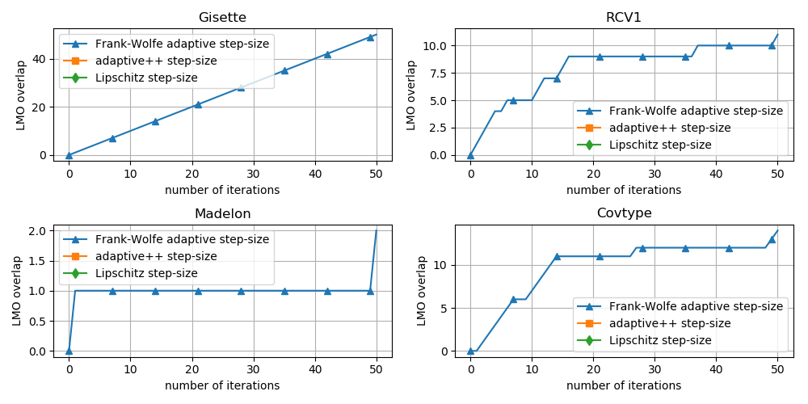

Note
Click here to download the full example code
Overlap in update direction for Frank-Wolfe¶
Out:
Running on the Gisette dataset
Running adaptive step-size variant
Running adaptive2 step-size variant
Running adaptive3 step-size variant
Running Lipschitz step-size variant
Running on the RCV1 dataset
Running adaptive step-size variant
Running adaptive2 step-size variant
Running adaptive3 step-size variant
Running Lipschitz step-size variant
Running on the Madelon dataset
Running adaptive step-size variant
Running adaptive2 step-size variant
Running adaptive3 step-size variant
Running Lipschitz step-size variant
Running on the Covtype dataset
Running adaptive step-size variant
Running adaptive2 step-size variant
Running adaptive3 step-size variant
Running Lipschitz step-size variant
import copt as cp
import matplotlib.pylab as plt
import numpy as np
from scipy.sparse import linalg as splinalg
# datasets and their respective loading functions
datasets = [
("Gisette", cp.datasets.load_gisette),
("RCV1", cp.datasets.load_rcv1),
("Madelon", cp.datasets.load_madelon),
("Covtype", cp.datasets.load_covtype)
]
fig, axes = plt.subplots(nrows=2, ncols=2, figsize=(10, 5))
for ax, (dataset_title, load_data) in zip(axes.ravel(), datasets):
print("Running on the %s dataset" % dataset_title)
X, y = load_data()
n_samples, n_features = X.shape
l1_ball = cp.utils.L1Ball(n_features / 2.)
f = cp.utils.LogLoss(X, y)
x0 = np.zeros(n_features)
for i, (step_size, label, marker) in enumerate([
["adaptive", "adaptive step-size", "^"],
["adaptive2", "adaptive2 step-size", "*"],
["adaptive3", "adaptive3 step-size", "s"],
[None, "Lipschitz step-size", "d"]
]):
print("Running %s variant" % label)
dt_prev = []
overlap = []
def trace(kw):
"""Store vertex overlap during execution of the algorithm."""
if dt_prev:
# check if the vertex of this and the previous iterate
# coincide. Since these might be sparse vectors, we use
# sparse.linalg.norm to make the comparison
prev_overlap = overlap[-1]
if splinalg.norm(dt_prev[0] - kw['s_t']) == 0:
overlap.append(prev_overlap + 1)
else:
overlap.append(prev_overlap)
dt_prev[0] = kw['s_t']
else:
overlap.append(0)
dt_prev.append(kw['s_t'])
cp.minimize_frank_wolfe(
f.f_grad,
x0,
l1_ball.lmo,
callback=trace,
max_iter=50,
step_size=step_size,
verbose=True,
lipschitz=f.lipschitz,
)
# ax.plot(trace_gt, label=label)
ax.plot(overlap, label=label, marker=marker, markevery=7 + i)
ax.legend()
ax.set_xlabel("number of iterations")
ax.set_ylabel("LMO overlap")
ax.set_title(dataset_title)
fig.tight_layout() # otherwise the right y-label is slightly clipped
ax.grid()
# plt.legend()
plt.show()
Total running time of the script: ( 3 minutes 57.540 seconds)